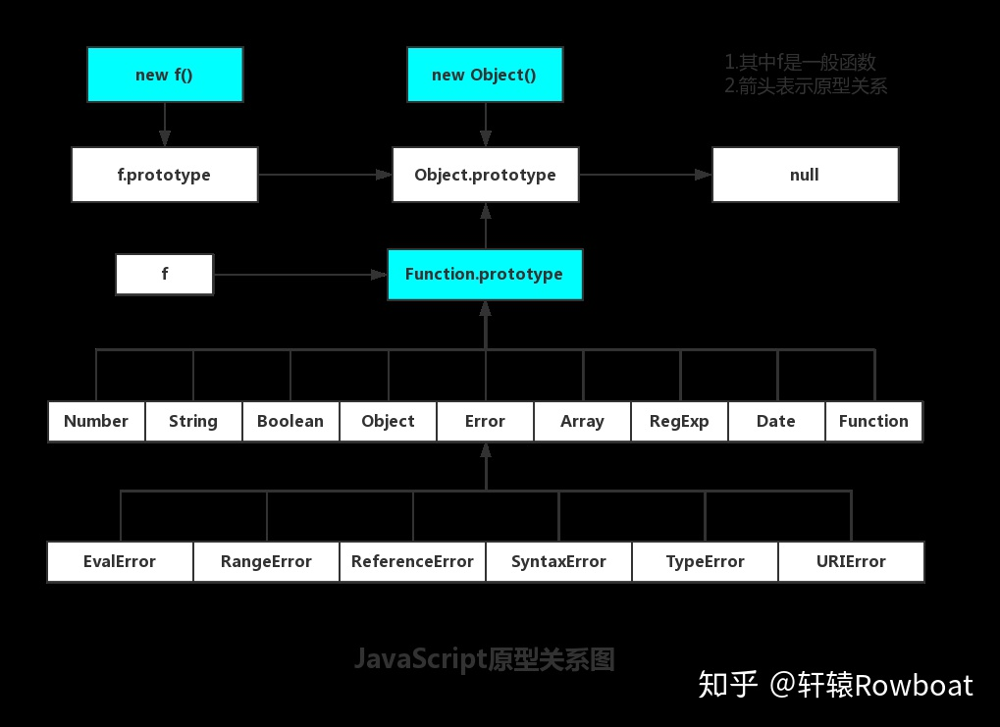

this：注意事项；（明白一点，对象中的this永远指向其上一级，funciton中的this是其执行环境） 1.立即执行函数中的this是指向window的； 2.作为某个对象的方法调用的时候，this指向当前对象； 3.使用call、apply、bind，绑定的this永远指向第一次绑定的对象； 4.在构造函数中，this指向新创建的对象； 5.箭头函数this指向其上下文中的this 
原型和原型链: 除了null以外，每一个对象都会有一个原型； 函数的原型对象是prototype，constructor（构造函数）是指向prototype属性所在的指针， fn的原型（prototype）是constructor,constructor是函数自身； fn函数的_proto_ 是function（）{}； 原型--对象--new 新对象--其他新对象，他们都继承自原型，对原型的继承使其具有了原型上所具有的方法和属性，对原型对象的修改，那么继承字该原型对象也具有了这些方法， 访问或者调用一个原型上方法，会在逐级的原型上去查找，首先是自身，的属性中查找，然后从他的继承者的身上找，之后是继承者的上级，知道找到对象的原型，如果还没有那就是undefind||null；
作用域--变量的作用范围 作用域链--由于变量的作用范围，造成内部可以访问外部变量，但是外部却无法访问内部变量的特点；多层嵌套之后，就行了作用作用域链条，金字塔；
寄生式继承：和原型类似，继承原型，就相当于拿到别的函数，然后new了一个，然后返回；他会具有上级的所有方法和属性，同时自身还可以添加方法； 寄生继承和寄生组合式继承
extends做了什么？ extends关键字用来创建一个普通类或者内建对象的子类。 继承的.prototype必须是一个Object 或者 null。
new做了什么？ .new做了什么： 创建了一个全新的对象。 这个对象会被执行[[Prototype]]（也就是__proto__）链接。 生成的新对象会绑定到函数调用的this。 通过new创建的每个对象将最终被[[Prototype]]链接到这个函数的prototype对象上。 如果函数没有返回对象类型Object(包含Functoin, Array, Date, RegExg, Error)，那么new表达式中的函数调用会自动返回这个新的对象。